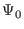
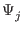
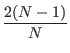
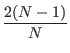
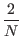
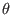
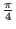
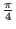
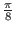
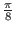

Our initial state
 = (1/ , 1/
, 1/ ,..., 1/
,..., 1/ ), is attained by performing the Walsh-Hadamard
transformation on the register in the zero state.
), is attained by performing the Walsh-Hadamard
transformation on the register in the zero state.
Let (k, l ) denote denote the state of our vector, where k is the amplitude of the marked state, and l is the amplitude of each of the remaining (N - 1) states. It is the case in Grover's algorithm that the unmarked states always have the same amplitude, so we can use this shorthand.
After the first application of the Walsh-Hadamard operator to place us in an equal superposition of states let us say we are in state = (k0, l0).
From theorem 1 we see the j'th iteration will produce the state
 = (kj, lj), where
k0 = l0 = 1/ ,
further:
,
further:
 kj + lj
kj + lj
lj - kj
With a little work on the recurrence relation we an solve for closed form solutions of k and j. Let the angle  be defined so that sin2 = 1/N. It can be shown through mathematical induction that:
We are interested in the number of iterations for k to have near
unit probability. Evidently, we will find the register to be in the
target state with unit probability when
(2m + 1) =  /2, or
when
m = (
/2, or
when
m = ( -2)/4. We can only perform an integer
number of iterations, but the probability of failure is less than
1/N if we iterate
-2)/4. We can only perform an integer
number of iterations, but the probability of failure is less than
1/N if we iterate
 /4 times, which is
very close to

/4 times, which is
very close to
 when N is large (
1/
when N is large (
1/ = sin ). [BBHT96] For the 50 percent
probability called for by Grover's algorithm we need only

= sin ). [BBHT96] For the 50 percent
probability called for by Grover's algorithm we need only
 iterations. [BBHT96]
iterations. [BBHT96]